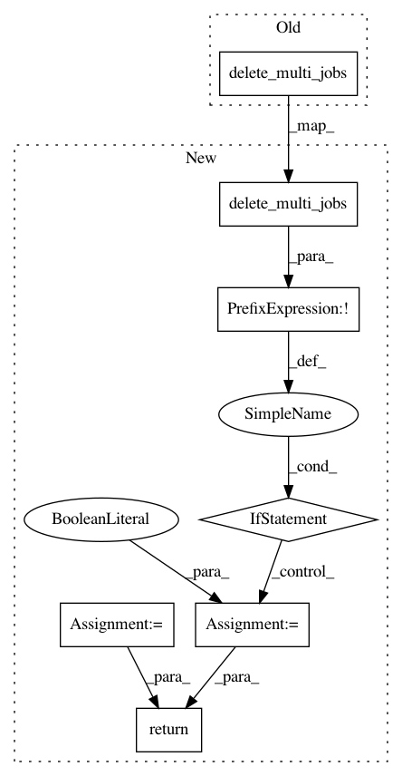

f208578701bd8d4acee8539662a5db18d1a0a930,polyaxon/scheduler/spawners/tensorflow_spawner.py,TensorflowSpawner,stop_experiment,#TensorflowSpawner#,125
Before Change
def stop_experiment(self):
super().stop_experiment()
self.delete_multi_jobs(task_type=TaskType.WORKER, has_service=self.WORKER_SERVICE)
self.delete_multi_jobs(task_type=TaskType.PS, has_service=self.PS_SERVICE)
def get_cluster(self):
cluster_def, _ = self.spec.cluster_def
After Change
def stop_experiment(self):
deleted = super().stop_experiment()
if not self.delete_multi_jobs(task_type=TaskType.WORKER, has_service=self.WORKER_SERVICE):
deleted = False
if not self.delete_multi_jobs(task_type=TaskType.PS, has_service=self.PS_SERVICE):
deleted = False
return deleted
def get_cluster(self):
cluster_def, _ = self.spec.cluster_def
In pattern: SUPERPATTERN
Frequency: 4
Non-data size: 7
Instances
Project Name: polyaxon/polyaxon
Commit Name: f208578701bd8d4acee8539662a5db18d1a0a930
Time: 2018-09-25
Author: mouradmourafiq@gmail.com
File Name: polyaxon/scheduler/spawners/tensorflow_spawner.py
Class Name: TensorflowSpawner
Method Name: stop_experiment
Project Name: polyaxon/polyaxon
Commit Name: f208578701bd8d4acee8539662a5db18d1a0a930
Time: 2018-09-25
Author: mouradmourafiq@gmail.com
File Name: polyaxon/scheduler/spawners/mxnet_spawner.py
Class Name: MXNetSpawner
Method Name: stop_experiment
Project Name: polyaxon/polyaxon
Commit Name: f208578701bd8d4acee8539662a5db18d1a0a930
Time: 2018-09-25
Author: mouradmourafiq@gmail.com
File Name: polyaxon/scheduler/spawners/pytorch_spawner.py
Class Name: PytorchSpawner
Method Name: stop_experiment
Project Name: polyaxon/polyaxon
Commit Name: f208578701bd8d4acee8539662a5db18d1a0a930
Time: 2018-09-25
Author: mouradmourafiq@gmail.com
File Name: polyaxon/scheduler/spawners/horovod_spawner.py
Class Name: HorovodSpawner
Method Name: stop_experiment